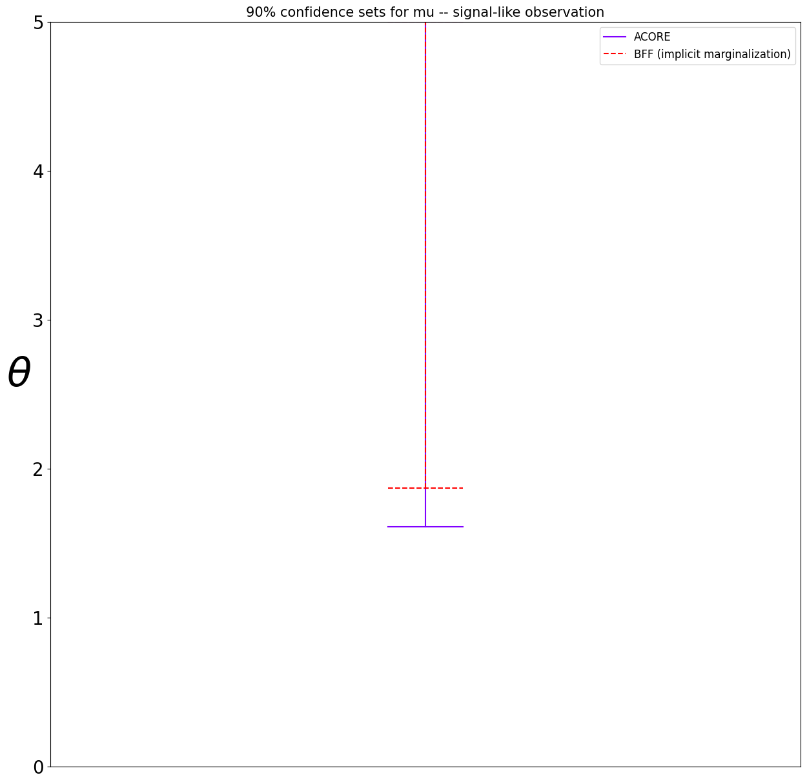
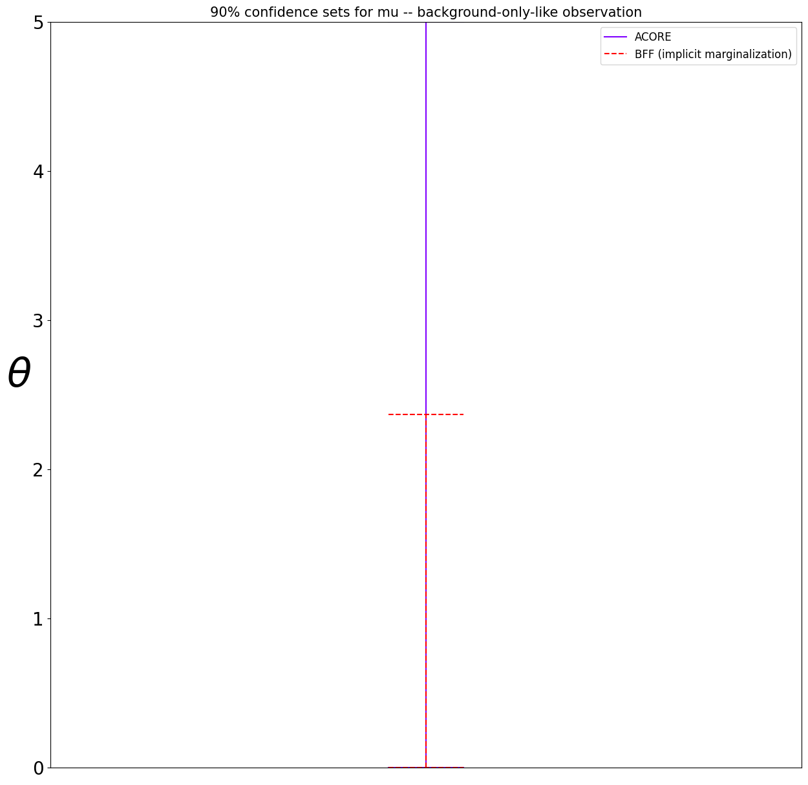
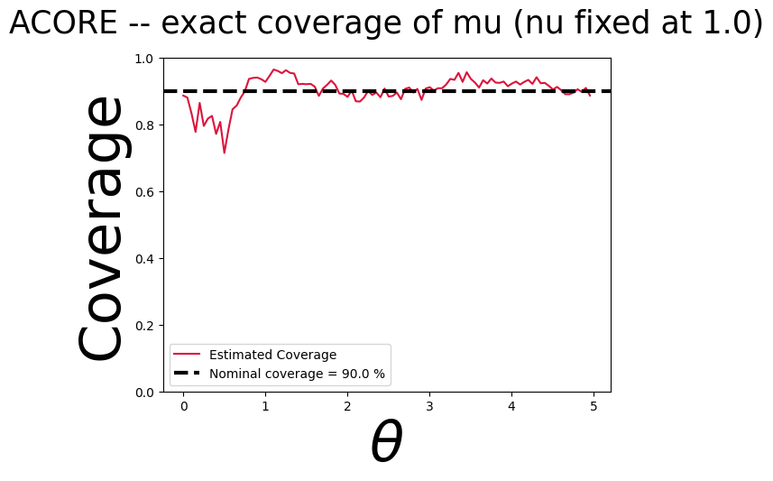
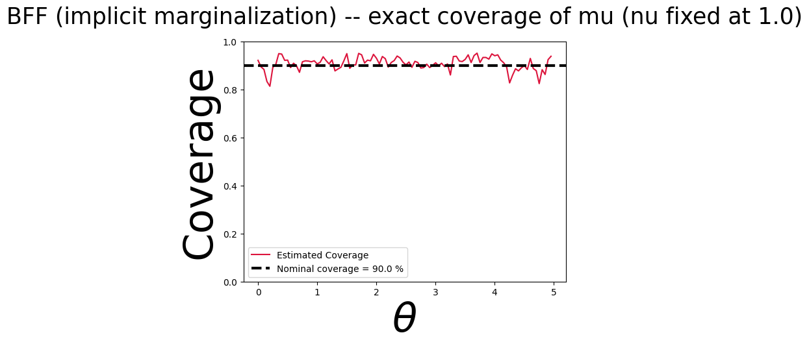
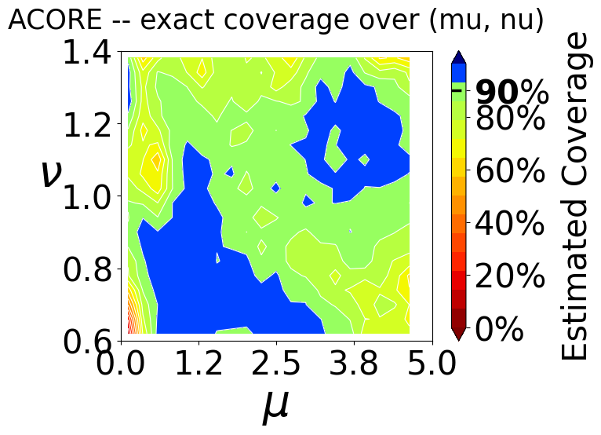
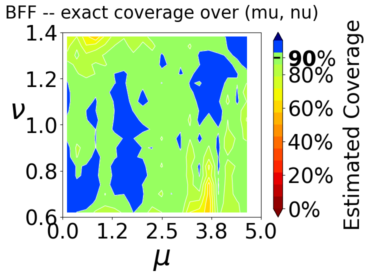

[1]:
%load_ext autoreload
%autoreload 2
INTRO & SETTINGS¶
The goal of this tutorial is to show how to construct confidence sets via quantile regression, using the likelihood-based test statistics ACORE and BFF, on the “on-off” Poisson counting experiment described in https://arxiv.org/abs/2107.03920 (Section 5.1 of the EJS paper).
A Poisson counting experiment where particle collision events are counted in the presence of both an uncertain background process and a (new) signal process:
The observable data \(X = (N_s, N_b)\) contains two measurements. The parameter of interest is the signal strength \(\mu\), whereas the background scaling factor \(\nu\) is a nuisance parameter. The hyperparameters \(s\), \(b\), \(\tau\) (expected signal count, expected background count, and the relative measurement time between the two regions) are treated as known.
Both ACORE and BFF estimate an odds function (likelihood up to a normalizing constant) via a probabilistic classifier, then invert a quantile-regression-based critical value to construct confidence sets — this is the “quantile regression construction” this notebook is named for.
[2]:
# SETTINGS
POI_DIM = 1
NUISANCE_DIM = 1
DATA_DIM = 2
BATCH_SIZE = 1 # assume we get to see only one observed sample for each "true" parameter
POI_SPACE_BOUNDS = {'low': 0, 'high': 5} # mu
NUISANCE_SPACE_BOUNDS = {'low': 0.6, 'high': 1.4} # nu
POI_GRID_SIZE = 1_000
CONFIDENCE_LEVEL = 0.90
B = 20_000 # simulations to train the test statistic (odds/likelihood-ratio estimator)
B_PRIME = 20_000 # simulations to train the critical-values (quantile regression) calibration model
SIMULATE¶
Let’s start from the simulator, which is used internally to generate the data needed to
estimate the test statistics;
estimate the critical values; and
diagnose the constructed confidence regions
[3]:
import torch
from lf2i.simulator.hep import OnOff
onoff = OnOff(
poi_grid_size=POI_GRID_SIZE,
batch_size=BATCH_SIZE,
poi_space_bounds=POI_SPACE_BOUNDS,
nuisance_space_bounds=NUISANCE_SPACE_BOUNDS,
)
Observations¶
[4]:
# a signal-like observation (mu away from 0) and a background-only-like observation (mu equal to 0)
x_obs_signal = onoff(param=torch.tensor([[3.0, 1.0]]), batch_size=1).reshape(1, DATA_DIM)
x_obs_null = onoff(param=torch.tensor([[0.0, 1.0]]), batch_size=1).reshape(1, DATA_DIM)
x_obs_signal, x_obs_null
[4]:
(tensor([[119., 68.]]), tensor([[72., 68.]]))
CONFIDENCE SET via ACORE¶
ACORE estimates the full odds function over \((\mu, \nu)\) jointly, then profiles out the nuisance \(\nu\) by numerical optimization at evaluation time (param_space_bounds tells it the box over which to profile). This is the “textbook” nuisance-parameter treatment: nothing about \(\nu\) is special-cased here, it’s simply part of the odds function’s input.
[5]:
from lf2i.inference import LF2I
from lf2i.test_statistics import ACORE
acore = ACORE(
estimator='gb_c',
poi_dim=POI_DIM,
nuisance_dim=NUISANCE_DIM,
batch_size=BATCH_SIZE,
data_dim=DATA_DIM,
param_space_bounds=[
(POI_SPACE_BOUNDS['low'], POI_SPACE_BOUNDS['high']),
(NUISANCE_SPACE_BOUNDS['low'], NUISANCE_SPACE_BOUNDS['high']),
],
n_jobs=8,
)
lf2i_acore = LF2I(test_statistic=acore)
[6]:
acore_region_signal = lf2i_acore.inference(
x=x_obs_signal,
evaluation_grid=onoff.poi_grid.reshape(-1, 1),
confidence_level=CONFIDENCE_LEVEL,
calibration_method='critical-values',
calibration_model='cat-gb',
simulator=onoff,
b=B,
b_prime=B_PRIME,
)
acore_region_null = lf2i_acore.inference(
x=x_obs_null,
evaluation_grid=onoff.poi_grid.reshape(-1, 1),
confidence_level=CONFIDENCE_LEVEL,
calibration_method='critical-values',
calibration_model='cat-gb',
simulator=onoff,
b=B,
b_prime=B_PRIME,
)
Estimating test statistic ...
Calibration ...
Evaluating ACORE for 20000 points...: 100%|██████████| 20000/20000 [01:48<00:00, 184.61it/s]
Retraining calibration...
Fitting 5 folds for each of 25 candidates, totalling 125 fits
/ocean/projects/mth260009p/jcarzon/conda/envs/tsi/lib/python3.11/site-packages/joblib/externals/loky/process_executor.py:782: UserWarning: A worker stopped while some jobs were given to the executor. This can be caused by a too short worker timeout or by a memory leak.
warnings.warn(
Constructing confidence sets ...
Computing ACORE for 1x500 points...: 100%|██████████| 1/1 [00:04<00:00, 4.33s/it]
Creating set 0...
Estimating test statistic ...
Calibration already complete
Constructing confidence sets ...
Computing ACORE for 1x500 points...: 100%|██████████| 1/1 [00:03<00:00, 3.88s/it]
Creating set 0...
CONFIDENCE SET via BFF (implicit nuisance marginalization)¶
BFF’s nuisance-marginalization path (numerically integrating the odds function over \(\nu\) via scipy.integrate.nquad) turns out to be unimplemented in the current lf2i codebase. Rather than implementing that numerical-integration machinery here, we take the approach of having BFF implicitly marginalize over \(\nu\): we simulate full \((\mu, \nu)\) pairs from OnOff (so \(X\) still reflects the true \(\nu\) variability across the training/calibration
sets), but only expose \(\mu\) to BFF’s odds estimator — i.e. BFF is configured with nuisance_dim=0 and never sees \(\nu\) as an input feature. Since \(\nu\) varies across the training distribution but is not conditioned on, the classifier learns the \(\mu\)-marginal-over-\(\nu\) likelihood ratio automatically, rather than through explicit integration.
This means we bypass LF2I.inference’s simulator=/b=/b_prime= convenience (which would forward all parameter columns unfiltered) and instead build the training (T) and calibration (T_prime) sets manually, dropping the \(\nu\) column before handing them to BFF.
[7]:
from lf2i.test_statistics import BFF
def simulate_mu_only(size):
mu = onoff.poi_prior.sample(sample_shape=(size,)).reshape(-1, 1)
nu = onoff.nuisance_prior.sample(sample_shape=(size,)).reshape(-1, 1)
samples = onoff(param=torch.hstack((mu, nu)), batch_size=BATCH_SIZE) # (size, batch_size, data_dim)
return mu, samples # nu discarded -> implicit marginalization
T = simulate_mu_only(B)
T_prime = simulate_mu_only(B_PRIME)
bff = BFF(
estimator='gb_c',
poi_dim=POI_DIM,
nuisance_dim=0,
batch_size=BATCH_SIZE,
data_dim=DATA_DIM,
n_jobs=8,
)
lf2i_bff = LF2I(test_statistic=bff)
[8]:
bff_region_signal = lf2i_bff.inference(
x=x_obs_signal,
evaluation_grid=onoff.poi_grid.reshape(-1, 1),
confidence_level=CONFIDENCE_LEVEL,
calibration_method='critical-values',
calibration_model='cat-gb',
T=T,
T_prime=T_prime,
)
bff_region_null = lf2i_bff.inference(
x=x_obs_null,
evaluation_grid=onoff.poi_grid.reshape(-1, 1),
confidence_level=CONFIDENCE_LEVEL,
calibration_method='critical-values',
calibration_model='cat-gb',
T=T,
T_prime=T_prime,
)
Estimating test statistic ...
Calibration ...
Retraining calibration...
Fitting 5 folds for each of 25 candidates, totalling 125 fits
Constructing confidence sets ...
Creating set 0...
Calibration already complete
Constructing confidence sets ...
Creating set 0...
COMPARISON¶
[9]:
from lf2i.plot.parameter_regions import plot_parameter_regions
plot_parameter_regions(
acore_region_signal[0], bff_region_signal[0],
param_dim=POI_DIM,
parameter_space_bounds=POI_SPACE_BOUNDS,
region_names=['ACORE', 'BFF (implicit marginalization)'],
title=f'{int(CONFIDENCE_LEVEL*100)}% confidence sets for mu -- signal-like observation',
)

[10]:
plot_parameter_regions(
acore_region_null[0], bff_region_null[0],
param_dim=POI_DIM,
parameter_space_bounds=POI_SPACE_BOUNDS,
region_names=['ACORE', 'BFF (implicit marginalization)'],
title=f'{int(CONFIDENCE_LEVEL*100)}% confidence sets for mu -- background-only-like observation',
)

EXACT COVERAGE¶
Since OnOff is cheap to simulate, we can check exact (Monte Carlo) coverage of both confidence-set constructions across the mu grid. For ACORE, the evaluation grid must include the nuisance dimension too (evaluation_grid needs param_dim columns) — we fix nu at its nominal value, 1.0, for this diagnostic slice. For BFF, only mu is needed, since the nuisance dimension was never part of its parameter space.
[11]:
nu_fixed = torch.ones(onoff.poi_grid[::10].shape[0], 1)
acore_coverage_grid = torch.hstack((onoff.poi_grid[::10].reshape(-1, 1), nu_fixed))
acore_grid_out, acore_coverage = lf2i_acore.coverage(
region_type='lf2i',
confidence_level=CONFIDENCE_LEVEL,
calibration_method='critical-values',
simulator=onoff,
evaluation_grid=acore_coverage_grid,
monte_carlo_size=1_000,
exact=True,
)
Evaluating ACORE for 100000 points...: 100%|██████████| 100000/100000 [07:41<00:00, 216.59it/s]
[12]:
from lf2i.plot.coverage_diagnostics import coverage_probability_plot
coverage_probability_plot(
parameters=acore_grid_out[:, 0],
coverage_probability=acore_coverage,
confidence_level=CONFIDENCE_LEVEL,
param_dim=POI_DIM,
title='ACORE -- exact coverage of mu (nu fixed at 1.0)',
)

LF2I.coverage(exact=True, ...) can’t be reused as-is for BFF: internally it simulates data and evaluates the test statistic/calibration model from the same evaluation_grid columns (see lf2i.diagnostics.monte_carlo_methods.monte_carlo_coverage). OnOff needs both mu and nu to simulate, but BFF’s odds estimator and calibration model were only ever trained on mu (implicit marginalization, as above). So we write a small helper that decouples the two: the full
(mu, nu) grid drives simulation, while only the mu column is handed to BFF.evaluate and to the calibration model – mirroring simulate_mu_only from the BFF section above, but for coverage instead of training/calibration.
[13]:
import numpy as np
from lf2i.utils.miscellanea import to_np_if_torch, to_torch_if_np
from lf2i.utils.calibration_diagnostics_inputs import preprocess_predict_quantile_regression
from lf2i.diagnostics.coverage_probability import compute_indicators_lf2i
def bff_exact_coverage(mu_nu_grid, monte_carlo_size=500):
"""Monte Carlo exact coverage of BFF confidence sets over a (mu, nu) grid.
`OnOff` needs (mu, nu) to simulate, but BFF's odds estimator/calibration model only ever
see mu -- so simulation and evaluation use different columns of the same repeated grid,
unlike `LF2I.coverage(exact=True, ...)`.
"""
n_grid = mu_nu_grid.shape[0]
sim_params = to_torch_if_np(np.repeat(to_np_if_torch(mu_nu_grid), monte_carlo_size, axis=0))
samples = onoff(param=sim_params, batch_size=BATCH_SIZE)
eval_params = to_np_if_torch(sim_params[:, :1]) # mu only
ts_values = to_np_if_torch(bff.evaluate(parameters=eval_params, samples=samples, mode='diagnostics')).reshape(-1)
calib_model = lf2i_bff.calibration_model[f'{CONFIDENCE_LEVEL:.2f}']
critical_values = to_np_if_torch(calib_model.predict(
preprocess_predict_quantile_regression(eval_params, calib_model, param_dim=1)
))
indicators = compute_indicators_lf2i(
calibration_method='critical-values',
test_statistics=ts_values,
parameters=eval_params,
critical_values=critical_values,
p_values=None,
alpha=None,
acceptance_region=bff.acceptance_region,
param_dim=1,
)
return indicators.reshape(n_grid, monte_carlo_size).mean(axis=1)
[14]:
# reuse the same (mu, nu=1.0) slice as the ACORE exact-coverage grid above, for a direct comparison
bff_coverage = bff_exact_coverage(acore_coverage_grid, monte_carlo_size=1_000)
[15]:
coverage_probability_plot(
parameters=acore_coverage_grid[:, 0],
coverage_probability=bff_coverage,
confidence_level=CONFIDENCE_LEVEL,
param_dim=POI_DIM,
title='BFF (implicit marginalization) -- exact coverage of mu (nu fixed at 1.0)',
)

EXACT COVERAGE OVER (mu, nu)¶
The slices above fix nu at its nominal value 1.0. Since BFF marginalizes nu out only implicitly (by never conditioning on it, relying on the training distribution to average over it correctly), it’s worth checking coverage on the full (mu, nu) plane rather than a single slice: if nu drifts away from where the training prior placed most of its mass, does BFF coverage still hold? ACORE, which explicitly profiles nu, gives a natural point of comparison on the same
grid.
Note this is POI_GRID_SIZE // 50 * 20 = 20 * 20 = 400 grid points, each needing its own Monte Carlo batch.
[16]:
mu_2d = onoff.poi_grid[::50] # 20 points
nu_2d = torch.linspace(NUISANCE_SPACE_BOUNDS['low'], NUISANCE_SPACE_BOUNDS['high'], steps=20)
mu_nu_grid_2d = torch.cartesian_prod(mu_2d, nu_2d) # (400, 2): mu varies slower, nu faster
[17]:
acore_2d_grid_out, acore_2d_coverage = lf2i_acore.coverage(
region_type='lf2i',
confidence_level=CONFIDENCE_LEVEL,
calibration_method='critical-values',
simulator=onoff,
evaluation_grid=mu_nu_grid_2d,
monte_carlo_size=300,
exact=True,
)
Evaluating ACORE for 120000 points...: 100%|██████████| 120000/120000 [10:00<00:00, 199.87it/s]
[29]:
coverage_probability_plot(
parameters=acore_2d_grid_out,
coverage_probability=acore_2d_coverage,
confidence_level=CONFIDENCE_LEVEL,
param_dim=2,
params_labels=[r'$\mu$', r'$\nu$'],
xlims=(POI_SPACE_BOUNDS['low'], POI_SPACE_BOUNDS['high']),
ylims=(NUISANCE_SPACE_BOUNDS['low'], NUISANCE_SPACE_BOUNDS['high']),
n_bins=20,
title='ACORE -- exact coverage over (mu, nu)',
)

[19]:
bff_2d_coverage = bff_exact_coverage(mu_nu_grid_2d, monte_carlo_size=300)
[30]:
coverage_probability_plot(
parameters=mu_nu_grid_2d,
coverage_probability=bff_2d_coverage,
confidence_level=CONFIDENCE_LEVEL,
param_dim=2,
params_labels=[r'$\mu$', r'$\nu$'],
xlims=(POI_SPACE_BOUNDS['low'], POI_SPACE_BOUNDS['high']),
ylims=(NUISANCE_SPACE_BOUNDS['low'], NUISANCE_SPACE_BOUNDS['high']),
n_bins=20,
title='BFF -- exact coverage over (mu, nu)',
)
